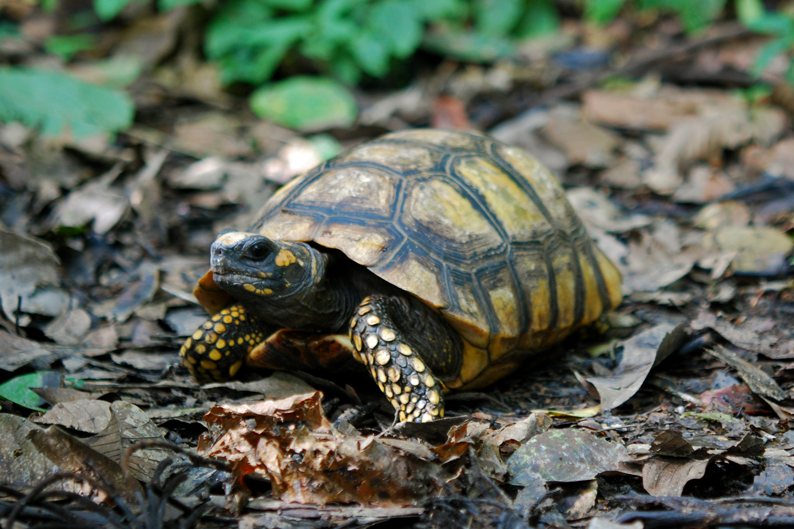

TORTUGAS MOTELO
Familia: Testudinidae
Especie: Chelonoidis denticulata
Proin finibus eget risus in placerat. Vestibulum varius dictum arcu, eu viverra ipsum convallis sit amet. Donec pellentesque fermentum lorem sit amet venenatis. Proin velit est, vulputate cursus euismod sed, tincidunt nec arcu. Sed vitae felis orci. Maecenas et mattis metus, ac egestas sapien.
Departamento: Amazonas
Provincia: Chachapoyas